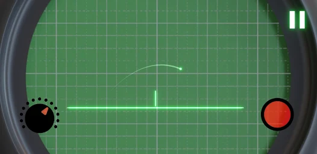
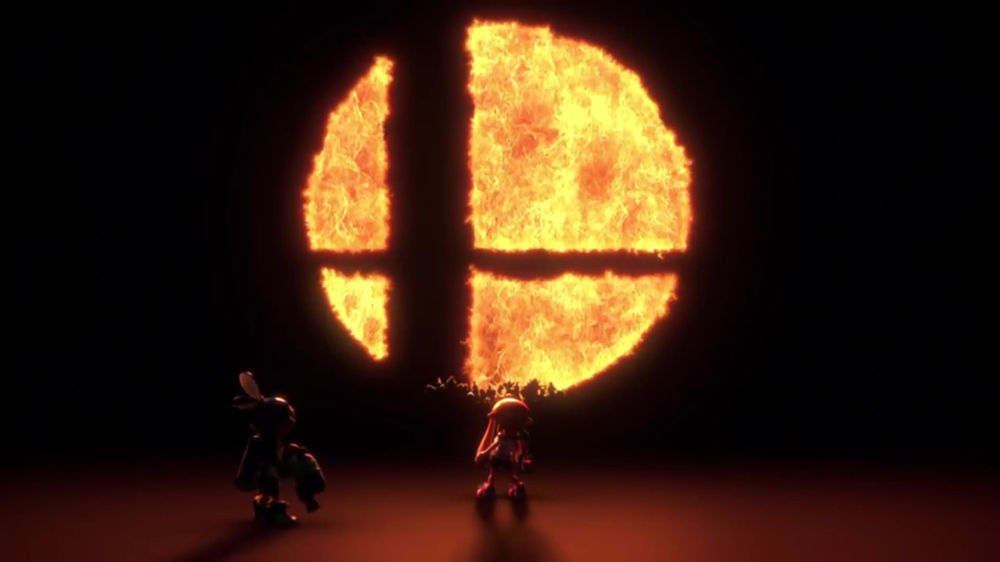
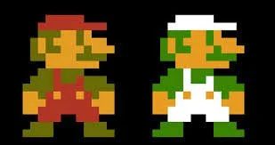
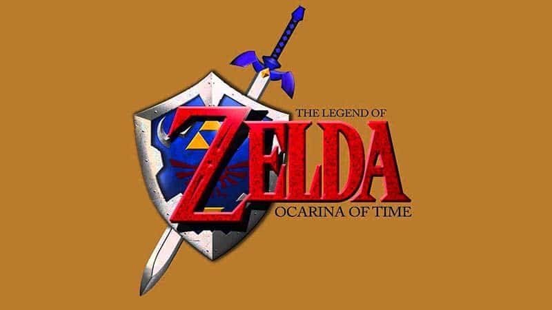
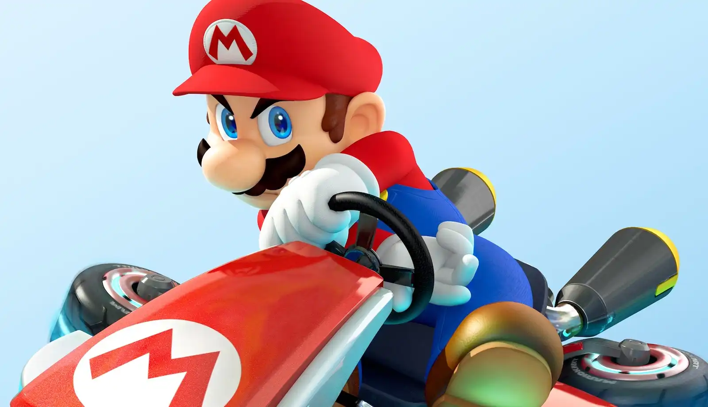
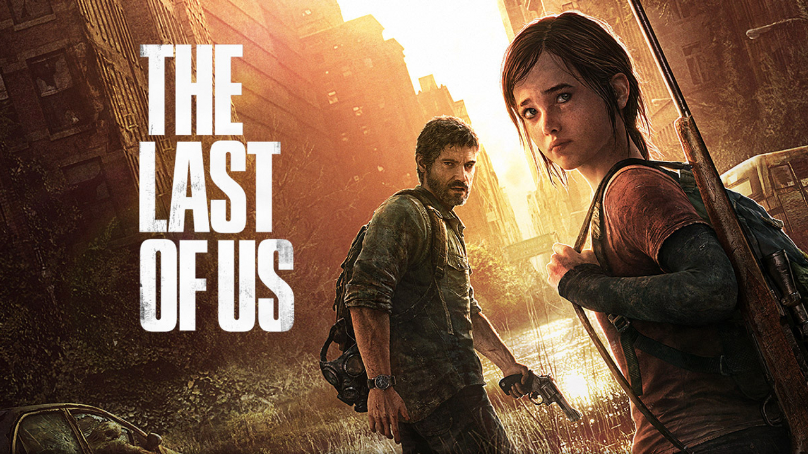
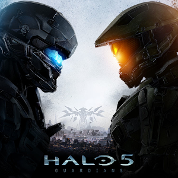

Los videojuegos son una forma de entretenimiento que ha evolucionado significativamente desde su creación, y hoy en día es una industria masiva que mueve miles de millones de dólares cada año. A lo largo de los años, los videojuegos han demostrado ser una forma de arte y una herramienta educativa, así como una forma de conectarse con otras personas a través de juegos en línea y multijugador.
Aunque los videojuegos pueden ser una forma positiva de entretenimiento, también hay preocupaciones sobre los posibles efectos negativos que pueden tener, especialmente en los niños y jóvenes. Algunas de estas preocupaciones incluyen la adicción, la violencia y la falta de actividad física. Por esta razón es importante encontrar un equilibrio saludable entre jugar videojuegos y otras actividades
¿Cuál fue el primer juego creado?
El primer videojuego creado específicamente para una consola fue "Tennis for Two", desarrollado por el físico estadounidense William Higinbotham en 1958. El juego fue creado y fue diseñado para ser jugado en un osciloscopio, un dispositivo electrónico que se utiliza para medir señales eléctricas.
Consistía en un juego de tenis simplificado, en el que dos jugadores controlaban una línea horizontal que representaba la red y una pequeña línea vertical que representaba la pelota. Los jugadores utilizaban un botón para golpear la pelota hacia el otro lado de la red y tratar de hacer que el otro jugador fallara.
Consolas más conocidas y compradas a lo largo de los años
- Nintendo 64/wii/Switch
- PlayStation 1/2/3/4/5
- Xbox 360/One/Series
Juegos más conocidos y jugados en:
Nintendo
Debemos tener en cuenta que Nintendo es una compañía de videojuegos muy conocida y querida por millones de personas en todo el mundo. A lo largo de los años, ha creado muchas franquicias y juegos populares, algunos de los cuales son los siguientes:
- 1. Super Mario Bros: Mario es probablemente la más conocida y popular de Nintendo, con títulos como Super Mario Bros, Super Mario 64, Super Mario Odyssey y muchos más.
- 2. The Legend of Zelda: Esta serie de juegos de aventuras y acción ha sido muy popular durante muchos años, con títulos como The Legend of Zelda Ocarina of Time, The Legend of Zelda Breath of the Wild y The Legend of Zelda Majora s Mask. En la actualidad al igual que Mario Bros, siguen en desarrollo estos juegos, siguiendo lo ques una secuela o simplemente una historia .
- 3. Mario Kart: La serie de juegos de carreras de Mario Kart ha sido muy popular durante muchos años, con títulos como Mario Kart 64,Mario kart para DS, Mario Kart 8 Deluxe
- 4. Smash Bros: ha sido muy popular entre los jugadores de todas las edades, ya que es un juego de lucha donde tu puedes elegir un personaje de batalla de cualquier juego de nintendo, en si es como una colaboración de todos en uno. Cuenta con títulos como Super Smash Bros. Melee, Super Smash Bros Brawl y Super Smash Bros Ultimate. 



PlayStation
Es una marca de consolas de videojuegos muy popular que ha producido muchos juegos populares a lo largo de los años. Algunos de los juegos más conocidos y jugados en las consolas PlayStation son los siguientes:
- 1. Grand Theft Auto V: Este juego de mundo abierto lanzado en 2013 ha sido uno de los más populares de la última década, con una gran cantidad de contenido para explorar y una historia rica y emocionante. Este maravilloso juego es unos de los mas jugados en las plataformas Online, por su alta calidad de jugabilidad.
- 2. The Last of Us: Este juego de acción y aventuras lanzado en 2013 ha sido muy popular entre los jugadores de todas las edades, con una emocionante historia y personajes. Este juego fué tan reconocido que en el presente año se hizo una serie basada en el videojuego.
- 3. Call of Duty: Un juego amado por toda la comunidad Gamer. La serie de juegos de disparos en primera persona de Call of Duty ha sido muy popular durante muchos años, con títulos como Call of Duty Modern Warfare, Call of Duty Black Ops 1/2 y otros.
- 4. God of War: La serie de juegos de acción y aventuras de God of War ha sido muy popular durante muchos años. Un videojuego basado en la mitología griega en los primeros juegos que fueron hasta PS3, ya después se basa en la mitología nórdica, con títulos como God of War III, God of War (2018).




Xbox
Es conocida por su potencia y capacidad de procesamiento, lo que la hace ideal para juegos de alta calidad y gráficos avanzados. La Xbox también cuenta con un servicio en línea llamado Xbox Live, que permite a los jugadores conectarse en línea y jugar juegos multijugador con otros jugadores de todo el mundo.
- 1. Halo: Es uno de los juegos principales de Xbox. Se centra en la lucha contra una raza alienígena conocida como los Covenant, así como contra otras amenazas. El jugador asume el papel del super soldado Spartan llamado Master Chief, que está equipado con un conjunto de armadura avanzada y un arsenal de armas poderosas.
- 2. Forza Horizon: También es uno de los juegos principales y desarrollados unicamente para Xbox. La serie de juegos de carreras de Forza Horizon ha sido muy popular entre los fans de los juegos de carreras, con títulos como Forza Horizon 4 y el 5 que es el último en el mercado.
- 3. Minecraft: Este juego de construcción, donde el limite de la imaginación lo pones tu, lanzado en 2011 y ha sido un éxito masivo en todo el mundo, permitiendo a los jugadores construir y explorar mundos virtuales.
- 4. Gears of War: La serie de juegos de disparos en tercera persona de Gears of War ha sido muy popular durante muchos años. se centra en un grupo de soldados llamados Gears, que luchan contra una raza alienígena conocida como los Locust, así como contra otras amenazas. El jugador asume el papel de uno de los Gears y utiliza un arsenal de armas avanzadas para eliminar a los enemigos. Tiene títulos como Gears of War 4, Gears 5.



Muchos se preguntan ¿Cuál de todas estas consolas es la mejor?
PlayStation, Xbox y Nintendo son las principales marcas de consolas de videojuegos en el mercado. Si bien cada marca tiene su propio enfoque y público objetivo, hay una competencia constante entre ellas para atraer a los jugadores y mantener su cuota de mercado.
Además, cada marca tiene su propia estrategia de marketing y promoción, con publicidad y eventos para atraer a los jugadores potenciales. También hay una competencia en línea, con servicios en línea y tiendas digitales compitiendo por la atención de los jugadores.